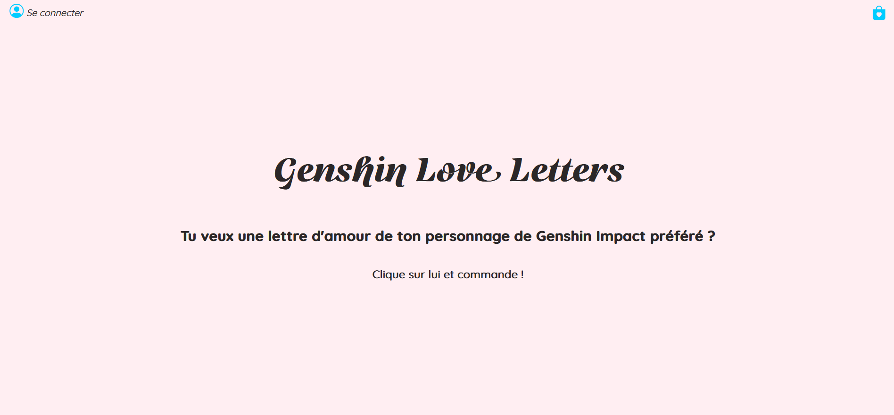
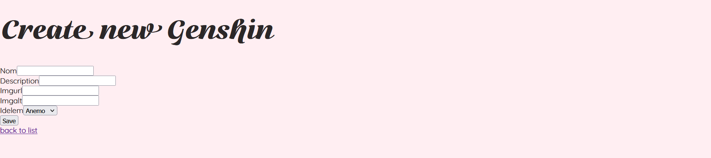
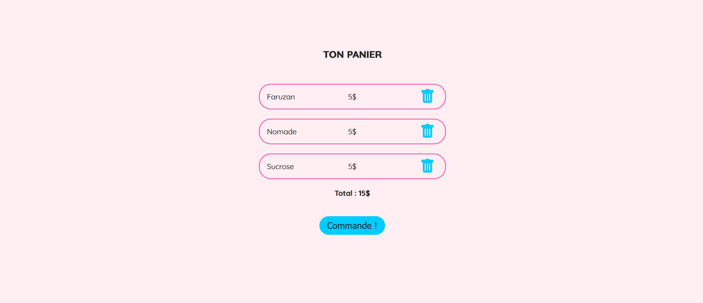

Projet Symfony
Symfony
JavaScript
SQL
PHP
En bref
En deuxième année du Bachelor Universitaire Technologique : Métiers du Multimédia et de l'Internet, nous avons dû développer individuellement un site internet avec Symfony. Le site permet d'acheter, d'échanger ou de réserver des “produits”. Les produits achetés, échangés ou réservés sont placés dans un “panier” lié à l'utilisateur connecté. Il fallait également rajouter un "back-office" pour le côté administrateur.
Mon projet
J'ai décidé de créer un site fictif de "Love letters" de personnages du jeu Genshin Impact. Toutes les images viennent du jeu Genshin Impact. Pour se connecter en tant qu'user, il faut mettre "user" et "456".


